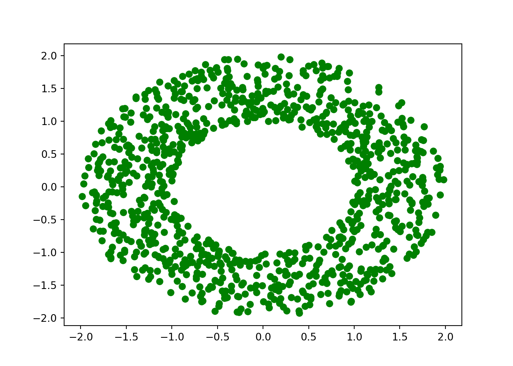

Demo
5.1 Suite
- ljzoiej fizejf
- zefj zoeif
- zefij zef
#### Sousous titre
\exo
## sous section
### sou sous sedctpo,
emzfe
\BeginKnitrBlock{theorem}<div class="theorem"><span class="theorem" id="thm:unnamed-chunk-1"><strong>(\#thm:unnamed-chunk-1) </strong></span>Here is my theorem. $E=mc^2$</div>\EndKnitrBlock{theorem}- Réponse à la premier question \(E=mc^2\) ````
install.packages("bookdown")
# or the development version
# devtools::install_github("rstudio/bookdown")Et voici une équation inline \(E=mc^2\). Affichage d’un résultat avec SI units: \(\SI{3.2e12}{\kilo\gram\per\second}\). Ne fonctionne pas en HTML..
Equation en ligne \[2x = 3 -\sqrt{2}\]
\[\begin{align} x &= 2x +5 \\ -x &= 5 \\ x &= -5 \end{align}\]
Les vecteurs colonnes miam: \[\overrightarrow{v(t)} = \begin{pmatrix}v_x(t) &=& x'(t)\\ v_y(t) &=& y'(t) \end{pmatrix}\]
Insérer une image en utilisant le code markdown


image
En modifiant la largeur: 200px
{width: 200px;}
En utilisant knitr:
Figures and tables with captions will be placed in figure and table environments, respectively
knitr::include_graphics("figures/fig.png")Figure 5.1: Here is a nice figure!
Figures and tables with captions will be placed in figure and table environments, respectively
knitr::include_graphics("figures/fig.png")Figure 5.2: Here is a nice figure!
Légende
install.packages("bookdown")
# or the development version
# devtools::install_github("rstudio/bookdown")Remember each Rmd file contains one and only one chapter, and a chapter is defined by the first-level heading #.
To compile this example to PDF, you need XeLaTeX. You are recommended to install TinyTeX (which includes XeLaTeX): https://yihui.org/tinytex/.
import numpy as np
import matplotlib.pyplot as plt
import numpy.random as rng
import matplotlib.cm as cm
from matplotlib.animation import FuncAnimation
radii=(rng.random(int(1e3))+1)**2
iota=2*np.pi*rng.random(int(1e3))
x_posit=np.sqrt(radii)*np.cos(iota)
y_posit=np.sqrt(radii)*np.sin(iota)
plt.plot(x_posit, y_posit, 'go')## [<matplotlib.lines.Line2D object at 0x7f9b1202dc18>]plt.show()